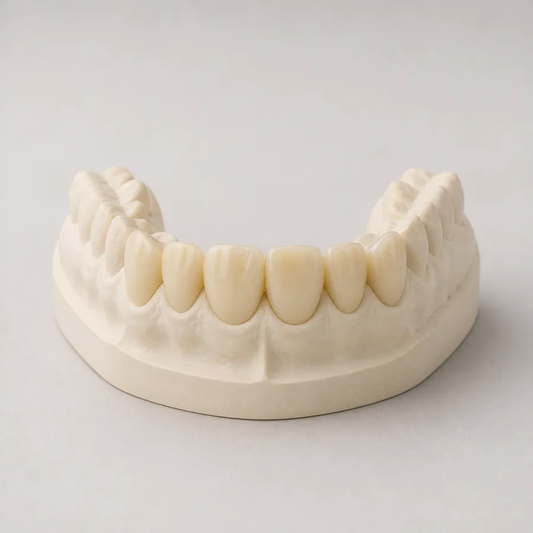
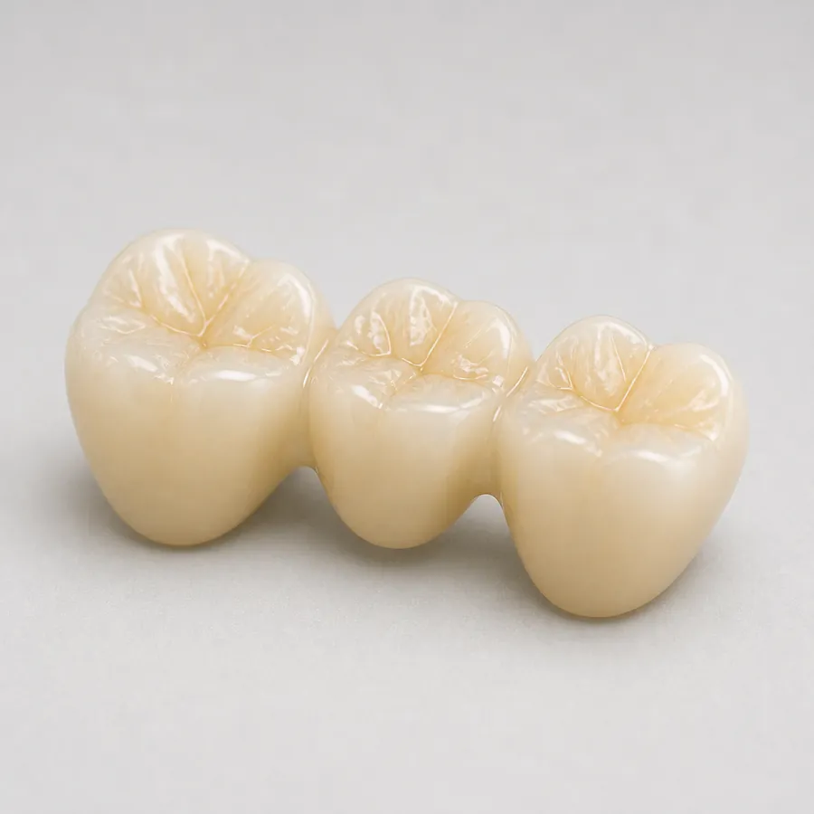
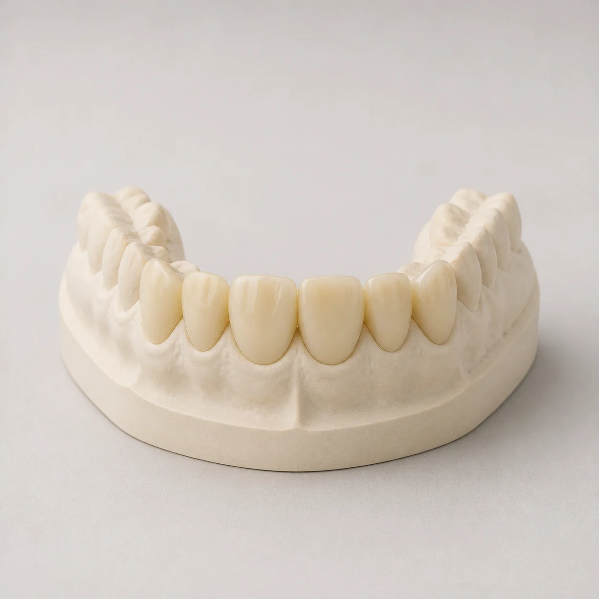
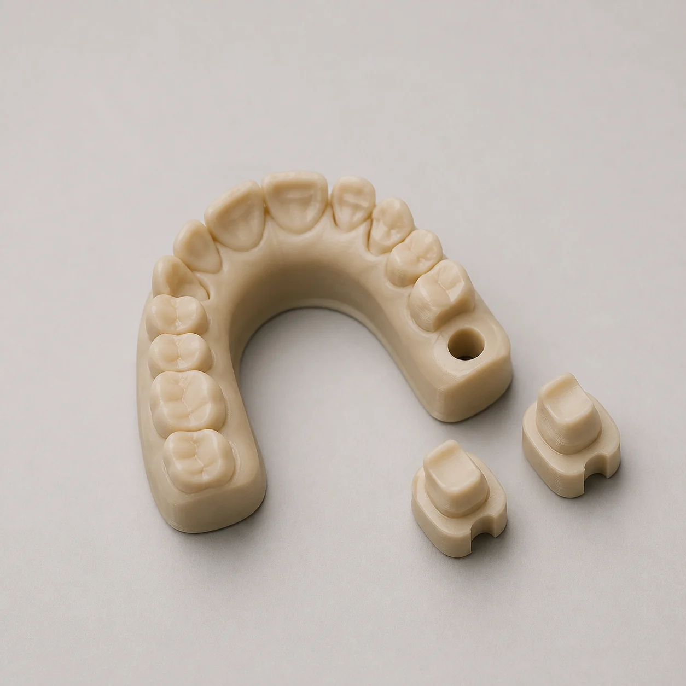

Prescribe
Tell us exactly what you need
Send your scan files with a note on the RX form about what the model is for. Contact the lab to confirm how to send the files.

Resin models printed from your intraoral scan, for checking fit, holding removable dies or showing a planned result.

Prescribe, print and receive, with a technician you can talk to at every step.
Send your scan files with a note on the RX form about what the model is for. Contact the lab to confirm how to send the files.
We print the model in resin from your scan files, with removable dies where the case needs them.

Turnaround for model printing isn’t published, so contact the lab to confirm timing before you plan the case.

Tell us the purpose on the RX form, and we’ll print the model to suit.
Talk to the labPlanning, models and shade work that make the final restoration easier to get right.
Discuss a caseA proposed tooth design made on a scan, before any prep.

Physical resin models printed from your scan.

Your patient visits the lab so the technician sees the tooth.

Book a 15 to 20 minute custom shade appointment at the lab on (415) 558-9717, or email shade photos to photos@dentalconceptssf.com. Either way, the technician building the restoration gets a proper look at the tooth.
Book a shade appointmentDesigned, made and finished at our lab on 9th Street. Your cases aren’t sent overseas.
3D-printed dental models give you something to hold when no physical impression was taken.
Questions about prep, design or shade go straight to the people making your case.
Placeholder: paste a real quote from a dentist about our model printing here, in their own words.
New to the lab? Email accounts@dentalconceptssf.com to open an account, download the RX form, then confirm with the team how to send impressions or scans.
Need a specific answer? Contact the lab team directly.
Talk with the lab3D dental model printing turns an intraoral scan into a physical resin model. Our dental model printing service prints models to check fit, hold removable dies or show a planned result.
Contact the lab to confirm accepted file formats and case requirements before you send files. Tick “Digital imp scan” on the RX form so we know a scan is coming.
Contact the lab to confirm the current way to send them, and we’ll walk you through it.
Yes, where the case needs them. Note it on the RX form when you order the model.
Ask the lab when you order the digital wax-up. Digital dental model printing is a common way to show a planned result.
Turnaround isn’t published for this service. Contact the lab to confirm timing for your case.
Call 1-800-700-LABS or email the team before you send patient records, and we’ll confirm the best way to get the case to us.
Contact the lab